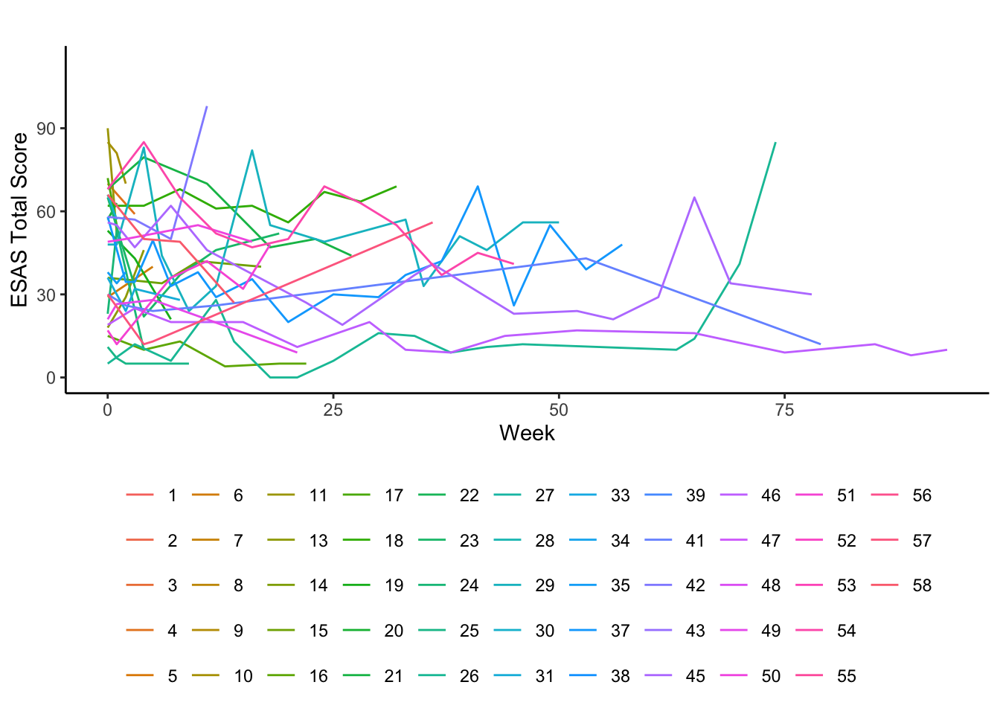
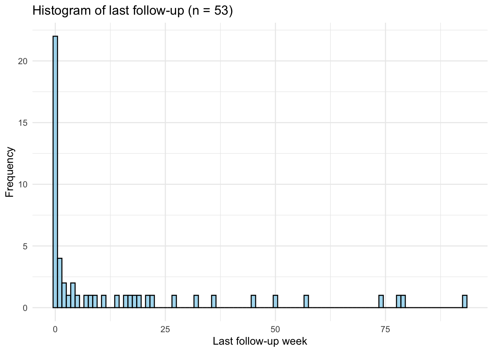
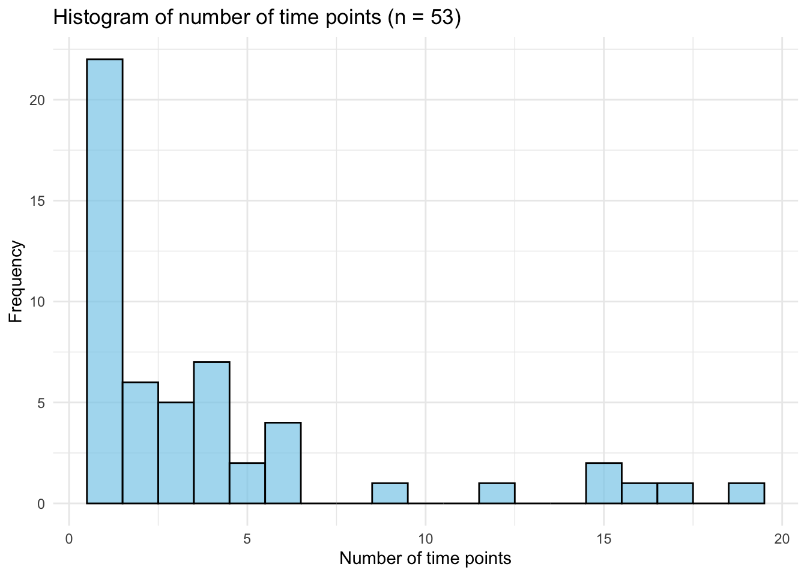

ESAS preliminary analysis
Preliminary findings from ESAS data - Morton Plant
In raw data set, there are 254 observations, and 58 patients.
We cleaned the data set, and included visits happened before the last hospitalization or ED visit and when there are valid ESAS scores. After data cleanning, we have 214 observations, and 53 patients.
Spaghetti Plot of ESAS Data
Span of data collection in weeks for all observations (n = 254):
| n | mean | sd | median | min | max | range | skew | kurtosis | se |
|---|---|---|---|---|---|---|---|---|---|
| 214 | 16.9 | 21.3 | 8.0 | 0.0 | 93.0 | 93.0 | 1.5 | 1.5 | 1.5 |
Span of data collection in weeks for all participants (n = 53)
| n | mean | sd | median | min | max | range | skew | kurtosis | se |
|---|---|---|---|---|---|---|---|---|---|
| 53 | 14.3 | 23.7 | 2.0 | 0.0 | 93.0 | 93.0 | 1.9 | 2.5 | 3.3 |

Number of time points for all participants (n = 53)
| n | mean | sd | median | min | max | range | skew | kurtosis | se |
|---|---|---|---|---|---|---|---|---|---|
| 53 | 4.0 | 4.6 | 2.0 | 1.0 | 19.0 | 18.0 | 1.9 | 2.5 | 0.6 |

| Characteristic | Overall, N = 531 | Baseline only, N = 221 | More than one time, N = 311 |
|---|---|---|---|
| intercept | 42 (24, 65) | 42 (24, 66) | 44 (27, 63) |
| slope | -0.1 (-1.9, 0.2) | NA (NA, NA) | -0.1 (-1.9, 0.2) |
| Unknown | 22 | 22 | 0 |
| visit | 35 (69%) | 17 (77%) | 18 (62%) |
| Unknown | 2 | 0 | 2 |
| n_weeks | 2 (1, 4) | 1 (1, 1) | 4 (3, 6) |
| max_week | 2 (0, 18) | 0 (0, 0) | 16 (4, 34) |
| Number of Hospitalizations or ED Visits | |||
| 0 | 16 (31%) | 5 (23%) | 11 (38%) |
| 1 | 20 (39%) | 12 (55%) | 8 (28%) |
| 2 | 7 (14%) | 1 (4.5%) | 6 (21%) |
| 3 | 4 (7.8%) | 2 (9.1%) | 2 (6.9%) |
| 4 | 2 (3.9%) | 2 (9.1%) | 0 (0%) |
| 5 | 1 (2.0%) | 0 (0%) | 1 (3.4%) |
| 13 | 1 (2.0%) | 0 (0%) | 1 (3.4%) |
| Unknown | 2 | 0 | 2 |
| Sex | |||
| F | 24 (45%) | 11 (50%) | 13 (42%) |
| M | 29 (55%) | 11 (50%) | 18 (58%) |
| Race | |||
| Asian | 1 (1.9%) | 0 (0%) | 1 (3.2%) |
| Black | 1 (1.9%) | 0 (0%) | 1 (3.2%) |
| NR | 2 (3.8%) | 1 (4.5%) | 1 (3.2%) |
| White | 49 (92%) | 21 (95%) | 28 (90%) |
| Ethnicity | |||
| Non Hispanic or Latino | 53 (100%) | 22 (100%) | 31 (100%) |
| BMI (kg/m^2) | 24.9 (22.1, 28.1) | 24.6 (21.2, 27.8) | 25.0 (22.3, 28.4) |
| Marital Status | |||
| D | 7 (13%) | 3 (14%) | 4 (13%) |
| M | 25 (47%) | 12 (55%) | 13 (42%) |
| S | 16 (30%) | 6 (27%) | 10 (32%) |
| W | 1 (1.9%) | 0 (0%) | 1 (3.2%) |
| Widowed | 2 (3.8%) | 1 (4.5%) | 1 (3.2%) |
| X | 2 (3.8%) | 0 (0%) | 2 (6.5%) |
| 1 Median (IQR); n (%) | |||
Note: There are 2 cases that are missing hospitalization info.
Logistic regressions of baseline and change (slope) ESAS value on hospitalizations or ED visits (Y/N).
| Characteristic | OR1 | 95% CI1 | p-value |
|---|---|---|---|
| Baseline ESAS | 1.00 | 0.98, 1.02 | >0.9 |
| 1 OR = Odds Ratio, CI = Confidence Interval | |||
| Characteristic | OR1 | 95% CI1 | p-value |
|---|---|---|---|
| Change of ESAS | 1.02 | 0.92, 1.14 | 0.7 |
| 1 OR = Odds Ratio, CI = Confidence Interval | |||
| Characteristic | OR1 | 95% CI1 | p-value |
|---|---|---|---|
| Baseline ESAS | 1.02 | 0.98, 1.06 | 0.5 |
| Change of ESAS | 1.05 | 0.93, 1.20 | 0.4 |
| 1 OR = Odds Ratio, CI = Confidence Interval | |||